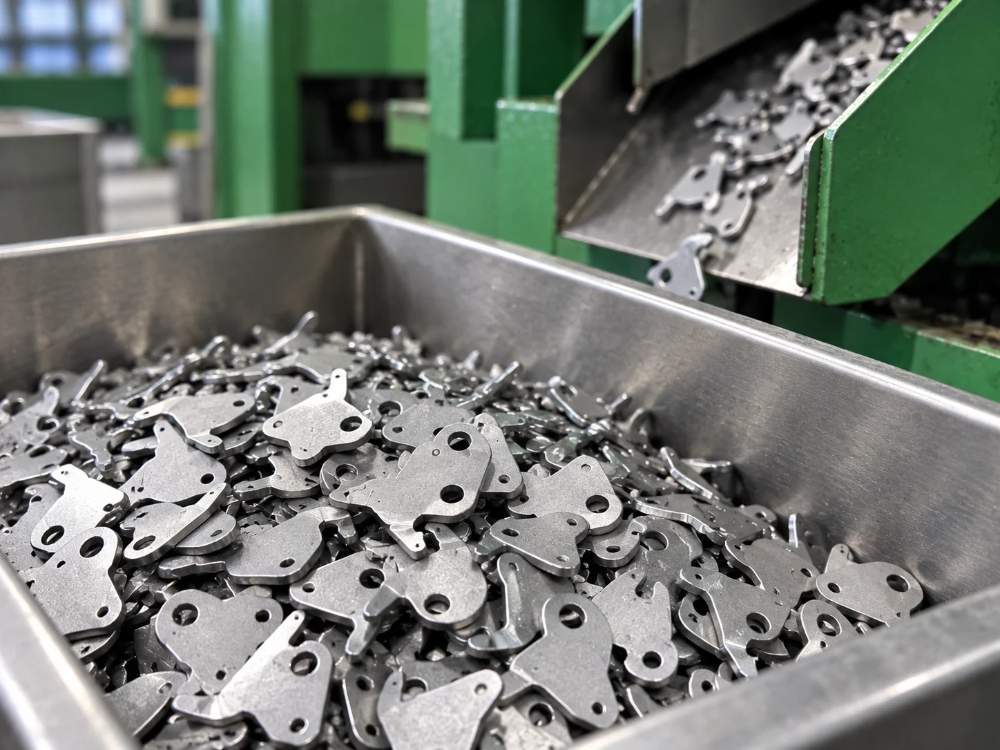
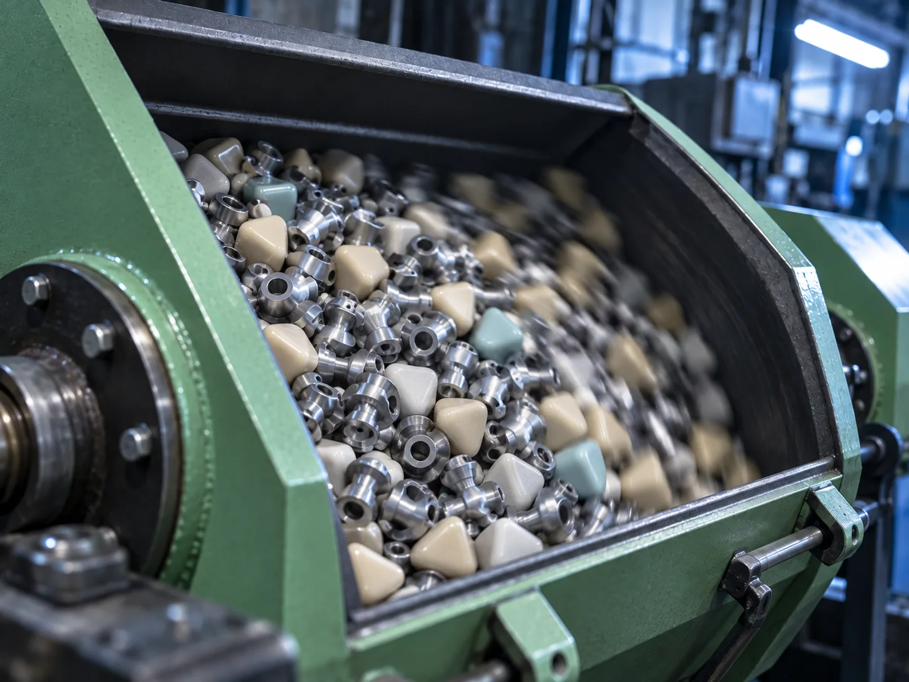
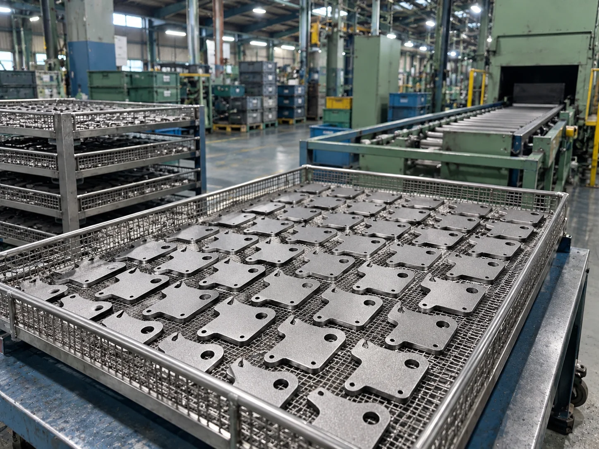

株式会社サンエイは、東大阪で金属バレル加工を専門に事業を続けてきました。バリ取り、スケール除去、脱脂、光沢仕上げ、メッキ前の下地処理、防錆まで、部品の材質や形状、その後の工程に合わせて表面を整えます。
機械チェーン、マテハン設備、立体駐車場、エレベーター関連など、さまざまな金属部品の表面処理に対応します。
メーカーなどで成形・熱処理された金属部品に対し、回転式・振動式のバレル機を用いて、バリ取り、スケール除去、脱脂、洗浄、光沢仕上げなどを行います。

品物の材質や形状、求める仕上がりに応じて研磨メディアとコンパウンドの組み合わせを調整し、油分や汚れ、焼けを取り除きながら表面を整えます。
加工前後の状態や、代表的な処理内容を写真とともに紹介します。

切断や加工後に残るバリを丸め、焼き入れ後の焦げやスケールを取り除き、後工程へ進みやすい表面状態へ整えます。
付着した油分や汚れを取り除き、素材表面を整えながら光沢を引き出します。研磨メディアの選定とコンパウンドの配合を品物ごとに調整し、求める仕上がりに合わせます。

メッキが付きやすい状態への下地処理や、加工後の錆を抑える防錆処理にも対応します。
工場の様子や設備、加工前後の比較、加工事例をnoteで発信しています。
記事は準備中です。公開後、最新の記事をここに表示します。
1972年（昭和47年）の創業以来、サンエイは金属バレル加工を専門に事業を続けてきました。創業家で世代を重ねながら、技術と経験を受け継いでいます。
小ロットからのご依頼も承ります。